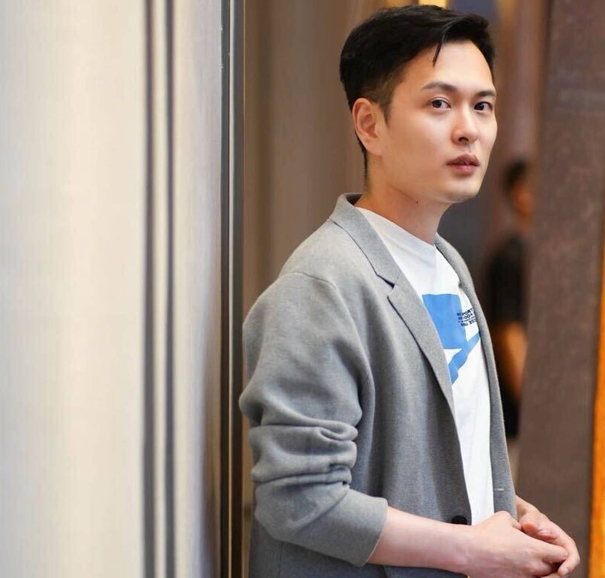

01 · PRACTICE
↗AI 线下实操课
两天完成从认知、提示词到图文、视频、智能体与商业化的实战训练。
我不是教你追逐更多 AI 工具。我帮助个人与企业，把脑子里的经验整理出来，让 AI 真正参与内容、获客、管理与增长。

从得到课程产品经理，到百万级新媒体矩阵操盘，再到 AI 创业与企业服务，我一直在做同一件事：把人的经验，变成可以交付、可以复制、可以长期积累的系统。
“AI 不是替代人，而是放大人的判断力。判断力差的人，会更快制造垃圾；判断力强的人，可以成为一家公司的超级中台。”
我的长期使命，是帮助更多人找到热爱，并用 AI 真正赚到钱。
从一次课程，到一套公司系统。每一项服务，都以能否形成真实结果和长期资产为标准。
两天完成从认知、提示词到图文、视频、智能体与商业化的实战训练。
把 AI 带进内容、销售、客服、管理和知识库，不停留在“听懂了”。
建立选题、脚本、素材、发布和复盘系统，把偶然爆款变成持续获客。
把老板和团队的判断沉淀进知识库、工作流和可复用的智能体。
我用三个标准判断一件事值不值得做：它是否在能力圈内，能否形成长期复利，最坏结果是否承受得住。
真正的善意，是把事实、风险和代价说清楚。
灵感只能带来一次结果，系统才能带来持续结果。
工具总会过时，知道什么值得做，永远不会过时。
不是追热点，而是帮助个人和企业建立能力圈、内容资产、知识库、自动化系统与长期复利。
把颜汝个人的判断力，升级为智焰科技可持续运转的 AI 商业化系统。
打通选题、脚本、图片、视频、发布与复盘，让一个想法能够稳定完成多平台交付。
把课程、案例、话术、复盘和历史内容，整理成 AI 能读取、团队能复用的公司资产。
把依赖颜汝个人的判断、表达和审美，沉淀成流程、标准、智能体与团队协作机制。
企业 AI 内训、AI 获客内容工厂、商业化咨询与课程合作。